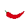

Bemutatása
Fajtái
- Közönséges Paprika
- Cserjés paprika
- Kínai paprika
- Bogyós paprika
- Szőrös paprika
Csípősség
| Paprika | Paprika Csípősség (Scoville érték) |
| zöldpaprika | 0 |
| a kevésbé csípős hazai paprikák | 500-1000 |
| csípős paprikák | 1500-2500 |
| a mexikói Serrano chili | 5000-20000 |